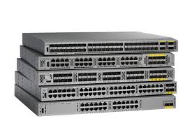
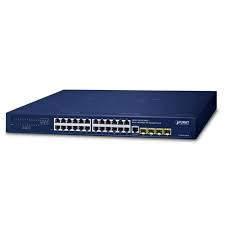
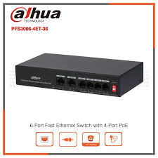
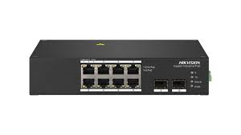
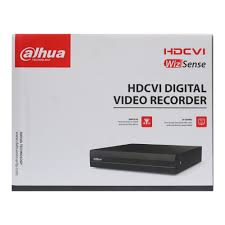
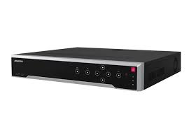
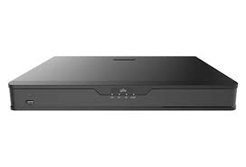
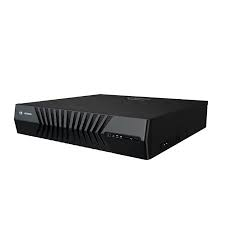
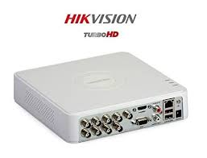
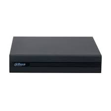

A Cisco network switch is a foundational piece of hardware used to connect computers, servers, access points, and printers within a Local Area Network (LAN). By using packet switching, it securely processes and forwards data exclusively to its intended destination device. Cisco offers everything from plug-and-play small office devices to complex, AI-ready enterprise systems.

PLANET Technology network switches are specialized hardware devices designed to connect multiple data networks and manage traffic across home, commercial, and heavy industrial environments.

Dahua network switches are highly regarded enterprise and surveillance-focused networking devices optimized for seamless video transmission, long-distance power-over-Ethernet (PoE), and industrial-grade stability.

Hikvision network switches are specialized hardware designed primarily to support IP surveillance systems, though they function excellently for general office networking. They are known for providing enhanced power delivery, long-range data transmission, and automatic camera maintenance.

Dahua Network Video Recorders (NVRs) are specialized, high-performance Linux-embedded storage appliances designed to record, process, and manage ultra-high-definition video feeds from digital IP security cameras.

A Hikvision Network Video Recorder (NVR) is a dedicated hardware server used in IP surveillance systems to centralize video recording, live viewing, and data storage from Hikvision Network Products.

UNV NVR stands for Uniview Network Video Recorder. It is a specialized, internet-connected computer system manufactured by Uniview Technologies. The device is engineered to receive digital video streams from IP (Internet Protocol) surveillance cameras, compress the footage using modern codecs like H.265 or Ultra 265, and record it directly onto internal hard drives.

Jovision Network Video Recorders (NVRs) are Linux-based, highly scalable surveillance recording units designed to manage and store digital video from IP security cameras.

Hikvision Digital Video Recorders (DVRs) are industry-leading hardware units used to record, compress, and manage security footage from analog and Turbo HD (coaxial) surveillance cameras.

A Dahua XVR (Penta-brid Video Recorder) is a hybrid security recorder designed to support multiple camera types, including traditional analog, HDCVI, AHD, TVI, and IP cameras. This allows you to upgrade to high-definition video surveillance without needing to rewire your existing system.